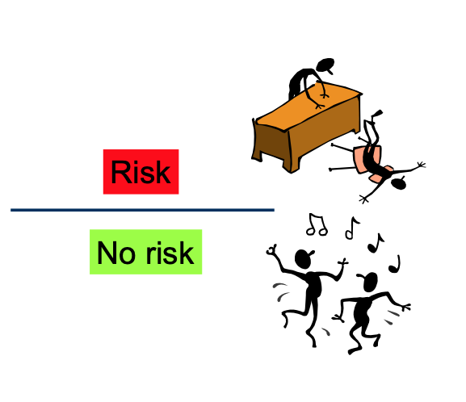

Chapter 2 2. Risk assessment
2.0.0.0.1 Figure 4: Risk assessment

Risk assessment is the central scientific component of risk analysis and was developed primarily because of the need to make decisions to protect health in the face of scientific uncertainty.
Risk assessment of food chemicals can be generally described as characterizing the potential hazards and the associated risks to life and health resulting from exposure of humans to chemicals present in food over a specified period.
Risk assessment is the key part of risk analysis that helps make decisions about human health protection from exposure to hazardous chemicals.
Risk assessment is an activity that provides a crucial link between regulatory and public health policy decision making. It offers a highly systematic framework within which information can be organized and evaluated to serve the practical needs of decision makers. It provides information on what can and cannot be learned from the available research about threats to human health.
According to the FAO/WHO, risk assessment is divided into four steps: hazard identification, hazard characterization, exposure assessment, and risk characterization.
- What is the probability (preferably expressed quantitatively) that adverse health effects will occur in individuals exposed to an agent (whether it is a chemical, biological, or physical agent) or activity?
2.0.1 2.1. Hazard identification
The purpose of food chemical hazard identification is to evaluate the weight of evidence for adverse health effects, based on assessment of all available data on toxicity and mode of action. It is designed to primarily address two questions: 1) the nature of any health hazard to humans that an agent may pose and 2) the circumstances under which an identified hazard may be expressed.
Hazard identification is based on analyses of a variety of data, ranging from observations in humans or domestic animals and studies in laboratory animals and in vitro laboratory studies through to analysis of structure–activity relationships. From the range of studies and observations available, the nature of any toxicity or adverse health effects occurring and the affected target organs or target tissues are identified.
An adverse effect is described by the International Programme on Chemical Safety (IPCS) as “Change in morphology, physiology, growth, reproduction, development, or lifespan of an organism which results in impairment of functional capacity or impairment of capacity to compensate for additional stress or increased susceptibility to the harmful effects of other environmental influences.” (control, 2020)
It is important to stress that regardless of the use situation, the intrinsic hazard of the chemical is the same and thus the hazard assessment from one country can be of use in another country.
2.0.2 2.2. Hazard characterization
Hazard characterization is the second stage in the process of hazard assessment and the second of four steps in risk assessment.
The qualitative and, wherever possible, quantitative description of the inherent properties of an agent or situation having the potential to cause adverse effects. This should, where possible, include a dose–response assessment and its attendant uncertainties.
Hazard characterization describes the relationship between the administered dose, or exposure to, a chemical and the incidence of an adverse health effect. The critical effect—that is, the first adverse effect observed as the dose or exposure is increased—is determined.
In cases where the toxic effect is assumed to have a threshold, hazard characterization usually results in the establishment of health-based guidance values—for example, an acceptable daily intake (ADI) for additives or residues or a tolerable intake (TI) for contaminants.

2.0.3 2.3. Exposure assessement
Exposure assessment is the third step in the process of risk assessment. Exposure depends on conditions that may vary between countries or, more likely, at a local level
Exposure assessment is defined as follows: “Evaluation of the exposure of an organism, system, or (sub)population to an agent (and its derivatives).
The exposure assessment of food chemicals may be described more narrowly as “The qualitative and/or quantitative evaluation of the likely intake of chemical agents via food as well as exposure from other sources if relevant”.
In the case of food chemicals, dietary exposure assessment takes into consideration the occurrence and concentrations of the chemical
The exposure assessment takes into account the consumption patterns of the foods containing the chemical and the likelihood of consumers eating large amounts of the foods in question (high consumers) and of the chemical being present in these foods at high levels. Usually a range of intake or exposure estimates will be provided (e.g. for average consumers and for high consumers), and estimates may be broken down by subgroup of the population (e.g. infants, children, adults).

2.0.3.0.1 Figure 7: Schematic illustration of exposure, absorption, distribution, metabolism, and excretion of chemicals (control, 2020).

Toxicokinetics: What the body do with the chemical? Absorption; Distribution; Metabolism; Excretion.

Toxicodynamics: What does the chemical do to the body? Interaction between a substance and the body that result in a toxic effect.
Agregate exposure: combined exposures to a single stressor across multiple routes and multiple pathways.

Cumulative exposure: combined exposure to multiple stressors via multiple exposure pathways that affect single biological target.

2.0.4 2.4. Risk characterization
Risk characterization is final step of the risk assessment process. Risk characterisation combines the results of hazard identification and dose-response assessment with exposure assessment.
The qualitative and, wherever possible, quantitative determination, including attendant uncertainties, of the probability of occurrence of known and potential adverse effects of an agent in a given organism, system, or (sub)- population, under defined exposure conditions.
In risk characterization, the information from the intake or exposure assessment and the hazard characterization is integrated into advice suitable for decision-making in risk management. Risk characterization provides estimates of the potential risk to human health under different exposure scenarios. It should include all key assumptions and describe the nature, relevance and magnitude of any risks to human health.
The risk characterization statement should include a clear explanation of any uncertainties in the risk assessment resulting from gaps in the science base. It should also include, where relevant, information on susceptible subpopulations, including those with greater potential exposure or specific predisposing physiological conditions or genetic factors. The advice to risk managers can be in the form of a comparison of the relative risks among risk management options.
The health risk characterisation can be described as follows:
*Risk unacceptable: Exposure/reference value ≥ 1*
*Risk acceptable: Exposure/reference value <1*